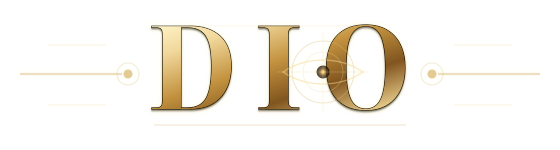

Deterministic Intelligence OrchestrationPortfolio operating architecture
DIO is a proof-carrying intelligence operating architecture: one governed organism that composes reusable capability into products, executes within explicit authority, records what happened, and carries evidence forward.
Rather than treating each project as an isolated app, DIO separates profiles, work patterns, governed executors, products and proof so capability can be reused without silently inheriting permission.
Reusable capability can combine, but authority does not hitchhike between roles.
Planning, execution, disclosure and release remain distinct operating decisions.
Outputs are accompanied by receipts, provenance and reviewable proof boundaries.
The portfolio becomes a governed product factory rather than a pile of disconnected AI demos.